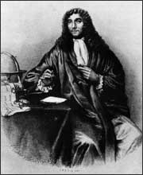

Anton van Leeuwenhoek
1632–1723
On September 17, 1683, Anton van Leeuwenhoek looked through his handmade microscope and saw many small "animalcules" swimming about. He was examining plaque, "a little white matter, which is thick" from his teeth and from the teeth of his wife, his daughter, and two old men who never cleaned their teeth. Describing these animalcules, Leeuwenhoek noted that "The biggest sort...had a very strong and swift motion, and shot through the water (spittle) like a pike does through water. Some spun round like a top." These animalcules were in fact bacteria, and this was the very first time they were described.
Leeuwenhoek was born in Holland in 1632. He was a fabric merchant by trade, although he also worked as a surveyor, city officer, and wine assayer (a person who judges wine quality). Grinding lenses and making simple microscopes was his hobby and his passion. He is known to have made over 500 microscopes. See an example of one of his microscopes.
At first, Leeuwenhoek's microscopes were powerful magnifying lenses. Over his lifetime, he kept improving his designs, and the later microscropes were able to magnify objects up to 200 times. He wrote letters to the Royal Society of London describing his discoveries. He wrote about the spirogyra, describing spiral-shaped green globules. His curiosity led him to describe blood cells, bacteria, and another microorganism called a rotifer. After his death in 1723, Leeuwenhoek was recognized as a scientist who had discovered a new way to study the natural world.
{kind=link}